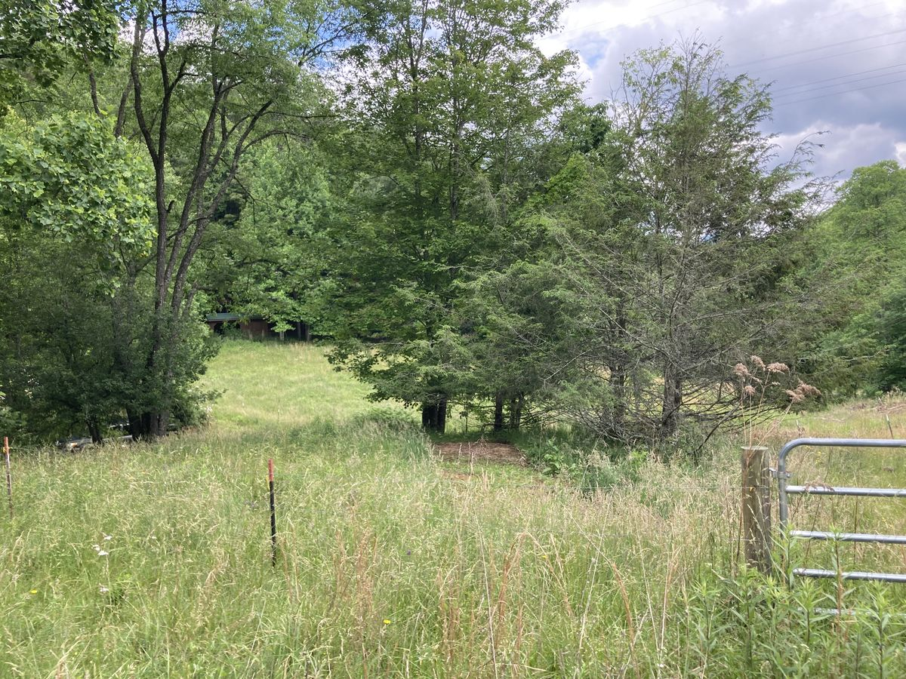
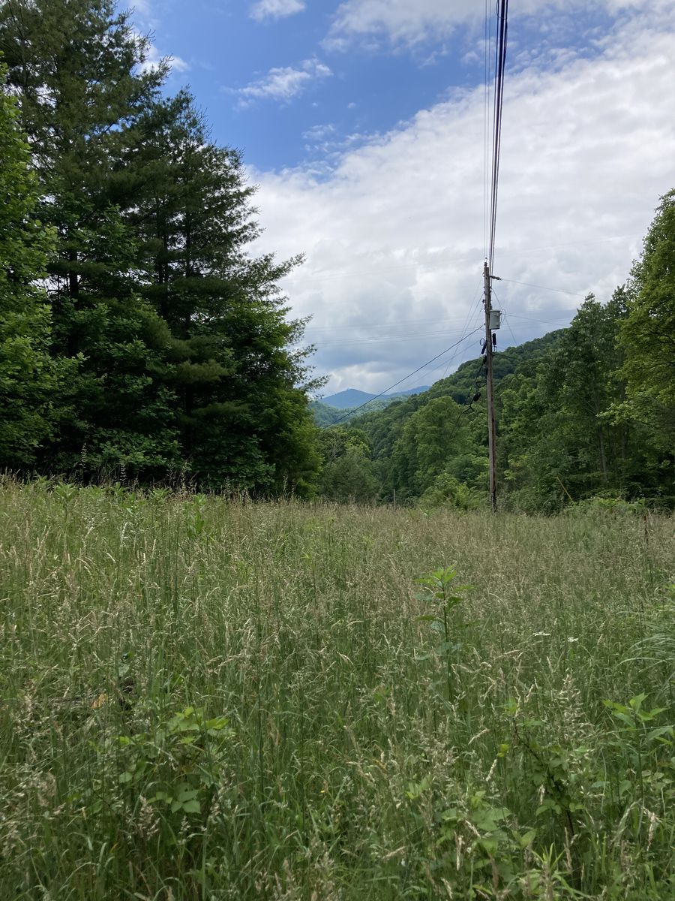
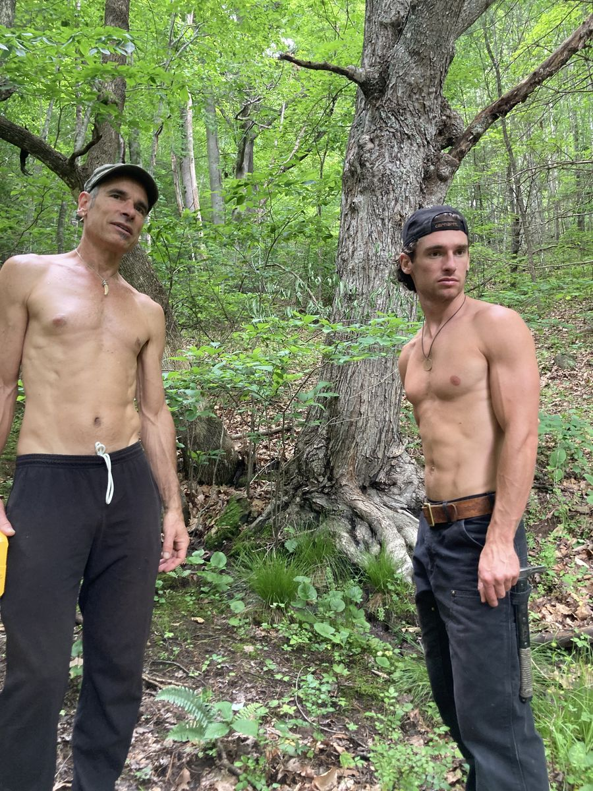
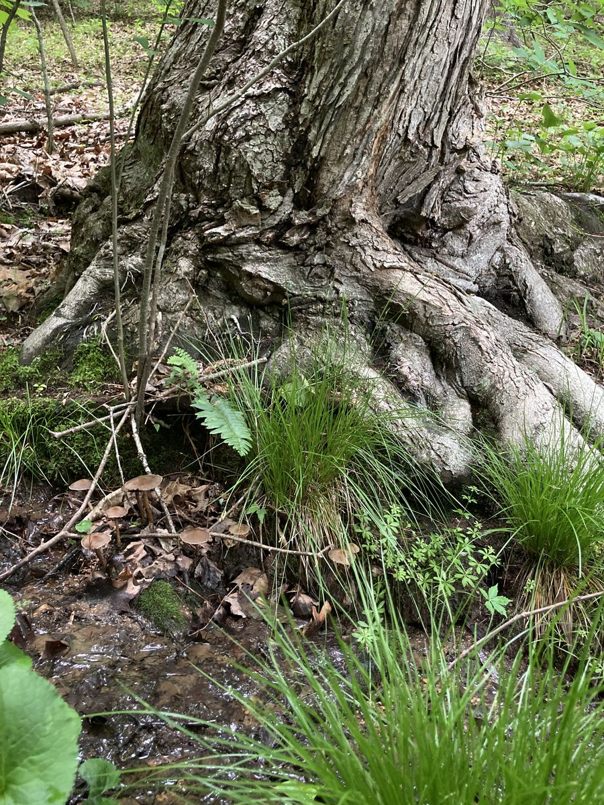
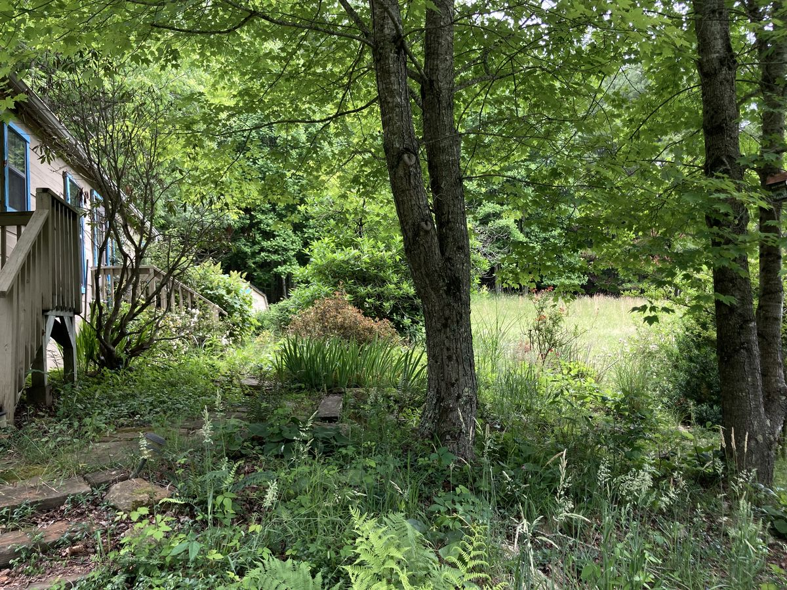
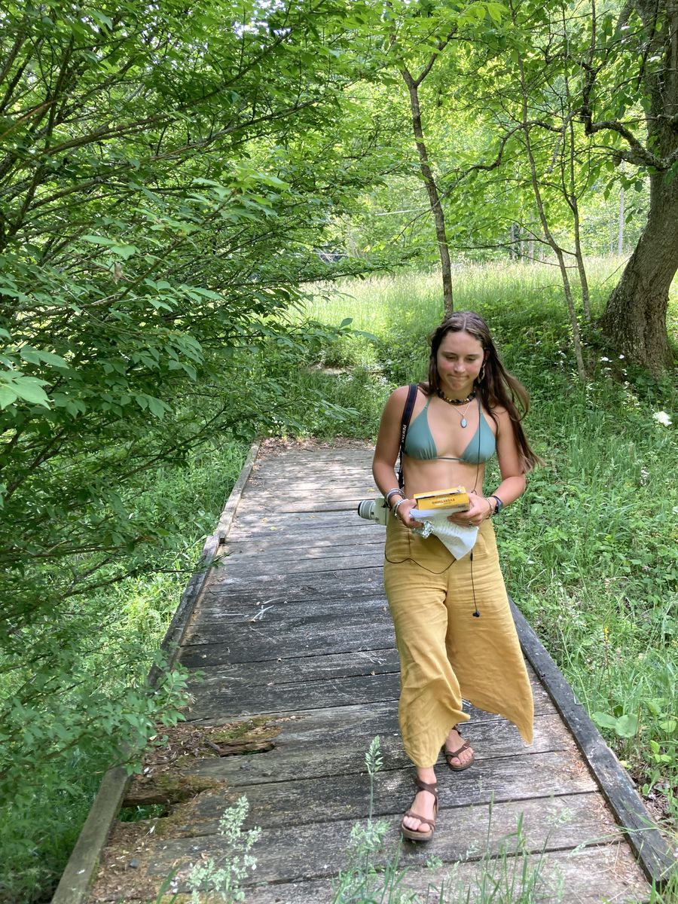

Living Earth
Village
You belong here without having to stop being yourself.
A living field for creating the conditions where life can touch us again. Not a belonging you earn by fitting in, but one you enter by showing up honestly, exactly as you are.
We are beginning with 25 acres of living land
We are listening for the people who feel this as something already alive in them.
Take a tourBelonging without fitting in.
Most belonging comes with an agreement: be enough like us. This is a different kind. Here you are received as you are, and revealed, not asked to edit yourself to be accepted.
01 — The word
What is
villaging?
It is a way of living. A way of relating to one another, to the land, and to life itself.
We use the word villaging because it is still alive. It is a verb. It is something we practice together rather than something we achieve.
- 01 a shared meal
- 02 a conversation
- 03 a building project
- 04 a conflict met honestly
- 05 a song around the fire
- 06 a morning tending the garden
Every act of participation strengthens the living field that, in turn, nourishes everyone within it.
02 — The Movement
It is happening now
This is not an idea waiting to begin. It is already alive. People on the land, together, now.






The Road Ahead
What we are building
Hover or tap a milestone to explore it
All timelines are participation and funding dependent. There is no final endpoint.
03 — The moment
Why now?
Many of us are focused on surviving while feeling disconnected.
We have houses, schedules, careers, and endless ways to stay busy — yet many of us rarely experience the simple nourishment of belonging to something alive.
We believe that humans naturally thrive when they participate in a living organism larger than themselves. Not through obligation or sacrifice — but because participation itself is nourishing.
Building a living pond
Caring for the land
Chanting together
Planting and gathering
Being honest when relationship becomes difficult
They are ways of knowing that we belong to life.
04 — Participation
How you can participate
Living Earth Village is unfolding one step at a time. There are limitless ways to participate, and different people feel called in different ways. What matters is not the role. It is the willingness to take part.
For a gathering
Arrive for an evening, a circle, a shared meal. Simply spend time in the field and see what it asks of you.
Join a workday
Help build the community kitchen, plant a garden, cook a meal, care for the animals, offer your craft.
Become a steward
Some may eventually become long-term residents or stewards of the land and of the relationships that hold it.
From wherever you are
Others may visit occasionally, contribute resources, or support the vision from afar. Distance is not absence.
You belong here not because you are one of us.
But because you do not have to stop being you to be here.
05 — The organism
A living
organism
Our village is more than a collection of people sharing land. We see it as a living organism.
Just as a healthy forest is nourished by the participation of countless forms of life, a thriving village is nourished by the participation of the people who belong to it.
The land, the relationships, the work, the music, the conversations, the silence, the animals, the children, and the elders all influence the health of the whole.
As we care for the organism, the organism cares for us. This is why participation is one of the greatest gifts we can give ourselves.
06 — Belonging
Fitting in,
or being
received
Most forms of belonging are quiet invitations to fit in. They gather around a center: an ideology, a faith, a politics, a diet, a way of life. The belonging is real, but it carries a condition. Be enough like us. The more you match, the more securely you belong.
Living Earth Village has a different center. Not a shared belief, but a shared capacity to stay present with one another as ourselves.
This does not remove discernment. It deepens it. The question is no longer whether you believe what we believe. It becomes whether we can live together in a way that lets each of us remain fully ourselves. One asks for conformity. The other asks for relationship.
It is less like a club with membership and more like an ecosystem. An oak does not reject a pine for being wrong. And an oak does not grow in the middle of the ocean. There is discernment without condemnation. Compatibility without superiority.
A living organism does not ask every cell to become identical. Different cells carry different gifts. What matters is whether they feed the life of the whole.
So you belong here not by agreeing, but by showing up honestly enough that you never have to fragment yourself to stay. Fully received, and fully revealed.
07 — Any given day
What does villaging look like?
It looks different every day.
Having the uncomfortable conversation you wanted to avoid — and discovering it brings you closer instead of farther apart.
Villaging is the ongoing practice of participating in what life is asking of us now.
Ecstasy
Life can be ecstatic
We believe that if we allow spirit in — if we offer ourselves up as vessels to let the divine express itself through our specific bodies with all its love and care — life can be ecstatic. A colorful, gorgeous celebration. The most beautiful and touching story ever written.
Sacred circle
Spirit moves through us
We believe that gathering in sacred circle — being present, holding hands — invites spirit to move through us lovingly and joyfully.
08 — The founders
Brie & Bjorn
The founders of Living Earth Village.
Embodying the divine flow as it moves through them as uncompromised life — effortlessly manifesting as joy, ease, abundance and peace.
Enter the field
Some will feel this completely
Every living field has its own frequency. Some people feel nourished by it. Others are drawn elsewhere, and that is not exclusion, only difference. If something in you recognized this before you finished reading, write to us. Tell us who you are and what you feel called toward. You do not have to arrive as anyone but yourself. There is no application. Only participation.
Connect
We'd love to hear from you
Whether you're curious about Villaging Life, interested in joining a gathering, bringing your gifts, supporting the vision, or simply starting a conversation, this is a place to reach out.
You don't have to know exactly how you fit. Begin with what feels alive for you.